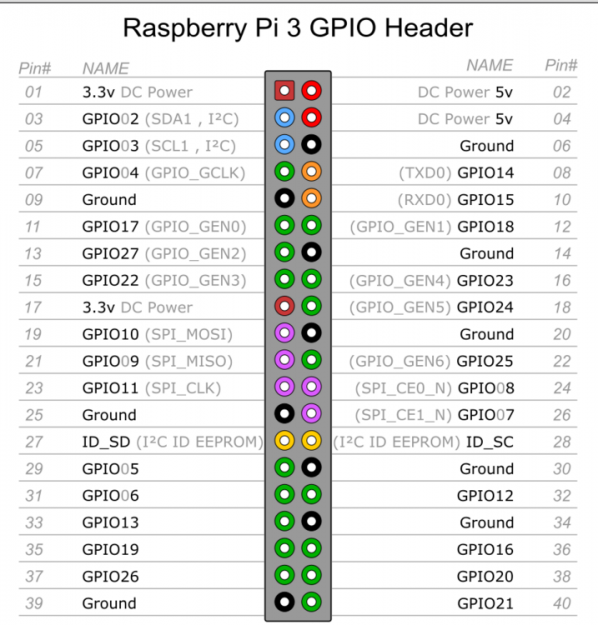

树莓派环境配置汇总
本文主要记录使用树莓派过程的一些问题和解决方案。系统是基于官方的Raspbian Stretch with desktop系统。
1.安装使用OpenCV
- 推荐使用16G或以上的卡，最好是class10以上，因为8G class6卡安装到35%就爆满了，推算安装完成要4.6G左右的空间。
- OpenCV的安装可不改变交换空间的大小，因为内存是够用的。
- 安装过程很慢，树莓派的CPU也容易发热，需要做好散热。
首先需要安装OpenCV使用的依赖环境：
sudo apt-get install build-essential git cmake pkg-config -y
sudo apt-get install libjpeg8-dev -y
sudo apt-get install libtiff5-dev -y
sudo apt-get install libjasper-dev -y
sudo apt-get install libpng12-dev -y
sudo apt-get install libavcodec-dev libavformat-dev libswscale-dev libv4l-dev -y
sudo apt-get install libgtk2.0-dev -y
sudo apt-get install libatlas-base-dev gfortran -y
上面的这些依赖和在PC端Linux中安装OpenCV是一样的。安装完成上述的依赖之后就需要下载OpenCV的源码。源码的下载方式很多，可以直接使用git clone到本地。 也可以下载官网中release的zip文件（通过wget或者是在浏览器中都可以）. 下载到源码之后，解压，创建一个cmake创建工程的目录，然后使用cmake创建一个编译的工程。 有些选项可以关闭掉，用来节省编译的时间，比如如果我们不需要在树莓派上使用Python来调用OpenCV那么Python的选项就可以关闭掉。
sudo cmake -D CMAKE_BUILD_TYPE=RELEASE \
-D CMAKE_INSTALL_PREFIX=/usr/local \
-D OPENCV_EXTRA_MODULES_PATH=~/opencv_contrib-3.4.1/modules \
-D INSTALL_PYTHON_EXAMPLES=ON \
-D BUILD_EXAMPLES=ON ..
cmake完成时候就可以使用下面的命令进行编译和将编译的结果按照到我们指定的位置，这个过程比较漫长，一般需要几个小时或者1个多小时。
make
sudo make install
编译的方式安装OpenCV相对来说效率非常低，在不要求使用高版本的OpenCV的情况下，我们可以可以直接使用apt安装源中提供的OpenCV安装包。首先是安装依赖包，然后执行如下的命令：
sudo apt install libopencv-dev
上述的这种方式安装的是opencv3.2.0版本，3.4.0版本中是没有DNN模块的，所以如果代码中使用了DNN那么还是得使用自己手动编译安装的办法。而且这个是提供的C++的调用接口，如果是要使用Python, 那么根本不需要这么复杂，只需要使用pip安装opencv-python即可。
pip3 install opencv-python
2.OpenCV程序中访问树莓派摄像头
这里说的树莓派摄像头，指的是树莓派专用接口的那种摄像头，普通的USB摄像头是可以不用配置直接访问使用的。
sudo raspi-config 可进入树莓派配置界面，打开摄像头。
raspivid -l -o tcp://0.0.0.0:3333 可测试摄像头是否开启。
sudo vim /etc/modules-load.d/rpi-camera.conf 打开摄像头配置文件。
在上述的文件最后添加一行bcm2835-v4l2，保存重启，至此opencv就可以读取树莓派自带的摄像头了。
3.树莓派IO操作
树莓派3B的IO图：

wiringPi库可以使用C++来对树莓派的io端口进行操作。wiringPi需要提前安装。首先从源那里获取软件包信息， 升级可升级的软件包：
sudo apt-get update
sudo apt-get upgrade
然后下载安装wiringPi库，wiringPi库是用来操作树莓派IO的一个库。
git clone git://git.drogon.net/wiringPi
cd wiringPi
sudo ./build
安装完成后就可以使用wiringPi库操作树莓派的IO
4.树莓派在没有外设时配置WIFI连接
首先烧录新系统，烧完系统后由于windows系统不能识别Linux的系统分区，所以进不了/etc，但是还好可以进/boot 在boot文件夹下面创建一个文件/boot/wpa_supplicant.conf
内容如下
country=CN
ctrl_interface=DIR=/var/run/wpa_supplicant GROUP=netdev
update_config=1
network={
ssid="你的WIFi的名字"
psk="你的WIFI的密码"
key_mgmt=WPA-PSK
priority=1
}
然后插入树莓派开机就ok了。
5.在树莓派中开发 opencv 大型程序
开发相对大一点的程序的时候，一般都会使用便于管理项目的工具，比如：cmake, qmake. 在使用qt作为软件界面的时候，qmake就显得非常的好用，但是在树莓派上直接安装qt开发工具非常的耗时间，因为树莓派性能没有那么的强。所以考虑树莓派上的环境搭建。 首先需要安装qt的开发环境和opencv, opencv可以自己编译，但是需要特别注意的是：gtk的版本必须和qt中使用的gtk的版本一致，不然就程序运行时会crash.
sudo apt-get install qt4-dev-tools #安装 Qt 开发环境
sudo apt-get install libopencv-dev #安装 opencv
安装好上述的工具之后，我们在pc上开发好项目，然后拷贝到树莓派上。进入项目目录:
qmake *.pro #生成 makefile
make #编译
这样就编译好了项目，可直接运行了。
6. 在树莓派上使用多个USB摄像头时，如何确定各个摄像头所对应的id?
比如，当有两个摄像头时，尝试一个为cv2.VideoCapture(0)，一个为cv2.VideoCapture(1)，通过看捕获的图像，可以确定各摄像头的id，但这个顺序不是固定的,树莓派在通电的时候,哪一个摄像头先通电的,哪一个就是0,下一个就是1,2,3,4,5… 但这样很被动，在我们的代码上就很麻烦了,没办法确定摄像头是哪一个!
6.1 查看USB摄像头的ID
在终端上输入lsusb, 通过插拔, 确定摄像头的ID是哪个!
lsusb
6.2 将端口重映射到新的固定的名字
将端口重映射到新的固定的名字,并且设置其权限为可读。使用对应的id端口映射到固定的名字上(看不懂无所谓,按教程来,往下走) 终端输入:
sudo vi /etc/udev/rules.d/rplidar.rules
复制以下代码,修改ID,自定义设备的名字
KERNEL=="video*", ATTRS{idVendor}=="038f", ATTRS{idProduct}=="6001", MODE:="0777", SYMLINK+="people_video"
创建生效后重新插拔一下USB摄像头
一般来说，make install完了目录下会有一个install_mainfest.txt的文件记录了安装的所有内容，然后xargs rm < install_manifest.txt就可以了。如果没有这个文件，可以自己重新make install，从log中过滤出install信息了。
- 原文作者：Binean
- 原文链接：https://bzhou830.github.io/post/20190103%E6%A0%91%E8%8E%93%E6%B4%BE%E7%9B%B8%E5%85%B3/
- 版权声明：本作品采用知识共享署名-非商业性使用-禁止演绎 4.0 国际许可协议进行许可，非商业转载请注明出处（作者，原文链接），商业转载请联系作者获得授权。